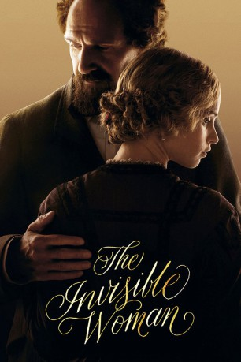
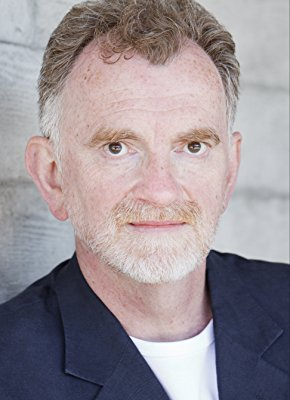

#4502 The Invisible Woman
Auszeichnungen: für 1 Oscars nominiert
 
 IMDB-Wertung: 6.1 / 10
IMDB-Wertung: 6.1 / 10  Metascore: 0
Metascore: 0 
1873. Nelly Ternan (Felicity Jones) ist verheiratet und lebt zusammen mit ihrem Mann und ihren Kindern im britischen Margate. Während sie an einer Schulaufführung von Charles Dickens‘ "No Thoroughfare" arbeitet, erinnert sie sich an ihre Zeit mit dem berühmten Autor: 1850 zog Nelly mit ihrer Mutter (Kristin Scott Thomas) und ihren Schwestern durch das Land und trat in zahlreichen Stücken auf. Bei einem dieser Auftritte wurde sie durch Dickens (Ralph Fiennes) entdeckt. Dieser war gerade auf der Höhe seiner Karriere und bereits seit Jahren mit Catherine (Joanna Scanlan) verheiratet, mit der er zehn Kinder hatte. Doch seit einiger Zeit fühlte sich Dickens von seiner Frau nicht mehr angezogen und als er die junge Nelly traf, begannen beide eine 13 Jahre anhaltende Affäre, die bis zu Dickens' Tod 1870 andauerte. Aber die Öffentlichkeit war von Dickens‘ Anwandlungen nicht angetan und auch Nelly hatte mit Anfeindungen zu kämpfen…
Jahr: 2013
Dauer: 111 Minuten
FSK: 0
Land: England Studio: Sony Pictures ReleasingTonspuren: DD5.1 - ,
Untertitel:
Auflösung: 1080p (1920x800) Größe: 7342 MB
Genre: Biographie, Drama, Geschichte, Liebe
Regisseur:  Ralph Fiennes
Ralph Fiennes
Drehbuch: Malcolm D. Lee
Soundtrack:
Darsteller:
 Felicity Jones als Nelly
Felicity Jones als Nelly John Kavanagh als Rev. William Benham
John Kavanagh als Rev. William Benham Tom Burke als Mr. George Wharton Robinson
Tom Burke als Mr. George Wharton Robinson- David Collings als Governor
 Kristin Scott Thomas als Mrs. Frances Ternan
Kristin Scott Thomas als Mrs. Frances Ternan Perdita Weeks als Maria Ternan
Perdita Weeks als Maria Ternan Ralph Fiennes als Charles Dickens
Ralph Fiennes als Charles Dickens Richard McCabe als Mr. Mark Lemon
Richard McCabe als Mr. Mark Lemon- Mark Dexter als Mr. Augustus Egg
- Christos Lawton als Mr. Evans
- Joseph Harmon als Edward 'Plorn' Dickens
 Joanna Scanlan als Catherine Dickens
Joanna Scanlan als Catherine Dickens Tom Hollander als Wilkie Collins
Tom Hollander als Wilkie Collins- Amanda Hale als Fanny Ternan
- Michael Hadley als Sir Peter
- Geoffrey Freshwater als Sir Oliver / Mr. Buckstone
 Jonathan Harden als Charles / Mr. Arnott
Jonathan Harden als Charles / Mr. Arnott Charlotte Hope als Young Prostitute
Charlotte Hope als Young Prostitute- Tahirah Sharif als Ternan Maid
 Michelle Fairley als Caroline Graves
Michelle Fairley als Caroline Graves- Grahame Fox als Station Guard
 Steve Morphew als Ticket Collector
Steve Morphew als Ticket Collector Laurence Spellman als Train Porter
Laurence Spellman als Train Porter Lasco Atkins als Mr. Telbin , uncredited
Lasco Atkins als Mr. Telbin , uncredited Gintare Beinoraviciute als Theatre Audience Member , uncredited
Gintare Beinoraviciute als Theatre Audience Member , uncredited- Christopher Jenner Cole als Painter , uncredited
 John Warman als Stage Hand , uncredited
John Warman als Stage Hand , uncredited- Tom Attwood als Mr. Lambourne
- Susanna Hislop als Mary
- Tommy Curson-Smith als Geoffrey
- Michael Marcus als Charley Dickens
- Gabriel Vick als Mr. Berger
- Joseph Paxton als Mr. Pigott
- Sophie Russell als Miss Ellen Sabine
- Gwendolen Chatfield als Marney Dickens
- Charissa Shearer als Katey Dickens
- Amber Batty als Georgina Hogarth
- Jeremy Assouly als Francis Dickens
- Declan Walker als Alfred Dickens
- John Joe Bitcliffe als Sydney Dickens
- Harry Harmon als Henry Dickens
- Daphne Neville als Victorian Lady
-  Jonathan Jaynes als Racegoer
- Tony Wood als Heckler
- Ophelia Standen als Harriet Graves
- James Traherne als Policeman
- Daniel André Pageon als Elderly Frenchman
- Odile Gash als Elderly Frenchwoman
- Philippe Smolikowski als French Doctor
- Assiba Abes als French Midwife
Datei: X:\2013(I-M)\Invisible Woman, The (2013, FSK0, 1920x800).mkv seit 29.09.2016
Festplatte: HD 2013(I-Z)-2014(A-Z)
 Es gibt insgesamt 89 Filme in der Gruppe '2013(I-M)'
Es gibt insgesamt 89 Filme in der Gruppe '2013(I-M)'